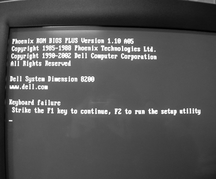
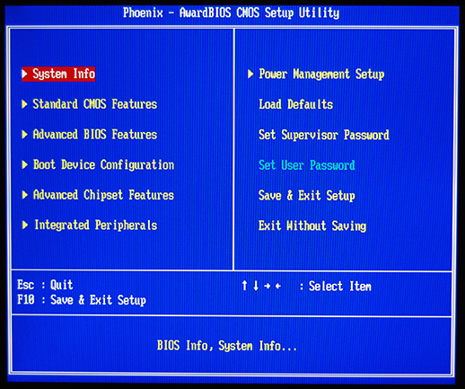
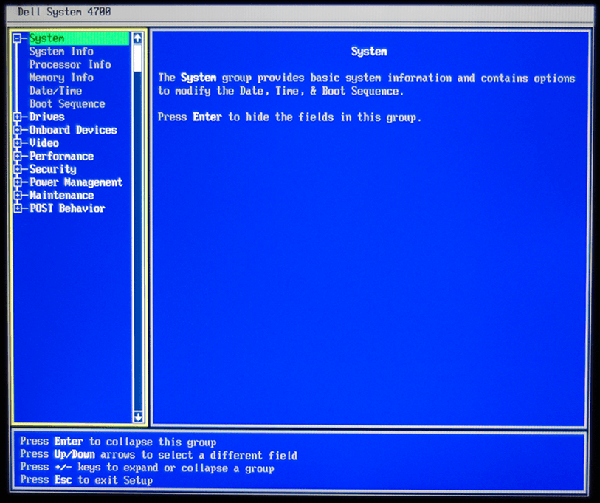
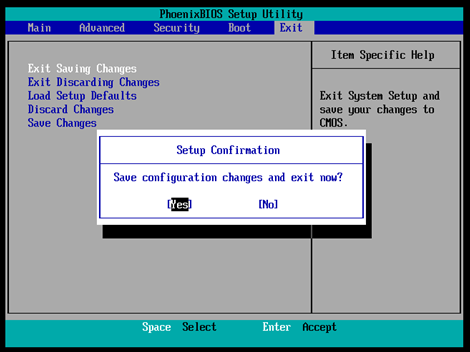

Introduction to BIOS, CMOS, and Firmware <<
Previous Next >> PCH 7-Expansion Cards, Audio, Video, and Storage
Configuring the System BIOS
To change the settings in the CMOS, the user needs to enter the BIOS. To do this, the user must press a valid key or key combination during the boot process as set by the computer manufacturer. The most common keys used to enter the BIOS are F2 and/or Delete. Typically, the keystroke required to enter the BIOS is displayed on the monitor during the boot process. If the keystroke isn’t displayed, a quick search of the manufacturer’s website will often tell the user the required keystroke to enter the BIOS.
要更改CMOS中的設置，用戶需要進入BIOS。為此，用戶必須在計算機製造商設置的引導過程中按下有效的鍵或組合鍵。用於進入BIOS的最常用鍵是F2和/或Delete。通常，在引導過程中，進入BIOS所需的擊鍵將顯示在監視器上。如果未顯示擊鍵，則快速搜索製造商的網站通常會告訴用戶輸入BIOS所需的擊鍵。

A boot screen, which displays the required keystroke to enter the BIOS. Photo used under CC-BY-SA license from Chip Poutine.
The BIOS interface and the keystrokes to enter the BIOS change depending on the BIOS manufacturer. Below are images of the BIOS interface from two different manufacturers. Notice that while the information available is consistent between the two, the interface is slightly different.
BIOS界面和用於進入BIOS的擊鍵取決於BIOS製造商。下面是來自兩個不同製造商的BIOS接口的圖像。請注意，儘管兩者之間的可用信息是一致的，但界面略有不同。

Phoenix Award BIOS

Dell BIOS
Unified Extensible Firmware Interface (UEFI)
Traditionally, there was only a single type of BIOS, which relied fully on text-based menus and the keyboard for input. More recently, most BIOS manufacturers have switched to the unified extensible firmware interface, or UEFI. This updated BIOS allows for both keyboard and mouse input, and provides a GUI instead of the standard text-based menus; support for GUID partition tables (GPT) allowing access to disks up to 2 TB and backward compatibility to legacy partition structures (such as the master boot record (MBR) and Linux's GRand Unified Bootloader (GRUB); boot from removable media; a user interface allowing for online connectivity for web access, diagnostics, and file management; and Secure Boot which protects pre-operating system code from modification. Some of these UEFI BIOS also include software that allows the user to surf the Internet, play basic games, and use backup programs without ever entering the normal operating system.
傳統上，只有一種類型的BIOS，它完全依賴於基於文本的菜單和用於輸入的鍵盤。最近，大多數BIOS製造商已切換到統一的可擴展固件接口或UEFI。此更新的BIOS允許鍵盤和鼠標輸入，並提供GUI而不是標準的基於文本的菜單。支持GUID分區表（GPT），允許訪問最大2 TB的磁盤，並向後兼容舊分區結構（例如主啟動記錄（MBR）和Linux的GRand Unified Bootloader（GRUB）；從可移動媒體啟動；用戶界面）允許在線連接以進行Web訪問，診斷和文件管理；以及安全啟動（Secure Boot），可防止操作系統前代碼被修改；其中某些UEFI BIOS還包括允許用戶上網，玩基本遊戲和使用的軟件。無需進入正常操作系統即可備份程序。
Automatic Configuring of BIOS/CMOS
Automatic configuration is a feature of some BIOS. While automatic BIOS configuration does not always create the most optimal settings, it can be quite useful if major errors are occurring to create a safe rollback to a known good state. Automatic configuration options include the BIOS defaults (original/failsafe settings) and setup defaults (optimal settings). There is often a turbo setup, which works toward a quick configuration for a faster system. Automatic configuration of the BIOS is often useful while troubleshooting a system.
自動配置是某些BIOS的功能。儘管自動BIOS配置並非總能創建最佳設置，但是如果發生重大錯誤以將安全回滾創建到已知的良好狀態，它可能會非常有用。自動配置選項包括BIOS默認設置（原始/故障安全設置）和設置默認設置（最佳設置）。通常有一個turbo設置，可以快速配置以實現更快的系統。在對系統進行故障排除時，BIOS的自動配置通常很有用。

Configuration of BIOS settings. Photo used under CC-BY license from Linux Screenshots.
Introduction to BIOS, CMOS, and Firmware <<
Previous Next >> PCH 7-Expansion Cards, Audio, Video, and Storage